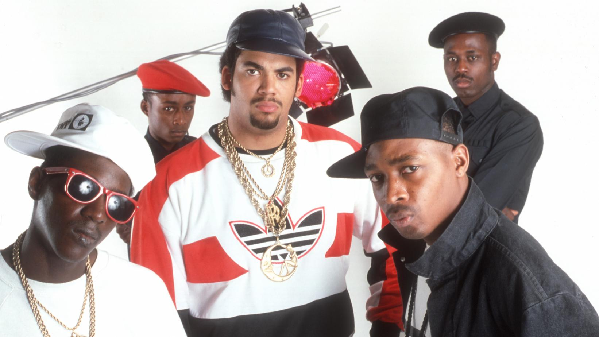
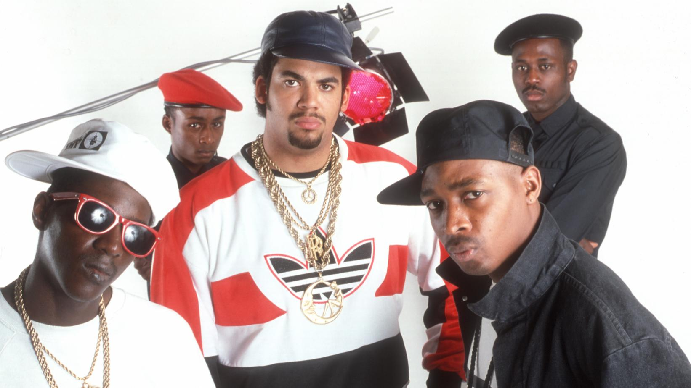

Members :
Chuck D
Flavor Flav
Terminator X
Professor Griff
Keith Schocklee
It Takes a Nation of Millions to Hold Us Back by Public Enemy
01. Countdown to Armageddon, 1:40
02. Bring the Noise, 3:46
03. Don’t Believe the Hype, 5:19
04. Cold Lampin‘ with Flavor, 4:17
05. Terminator X to the Edge of Panic, 4:31
06. Mind Terrorist, 1:21
07. Louder Than a Bomb, 3:37
08. Caught, Can We Get a Witness?, 4:53
09. Show ’em Whatcha Got, 1:56
10. She Watch Channel Zero?!, 3:49
11. Night of the Living Baseheads, 3:14
12. Black Steel in the Hour of Chaos, 6:23
13. Security of the First World, 1:20
14. Rebel Without a Pause, 5:02
15. Prophets of Rage, 3:18
16. Party for Your Right to Fight, 3:24